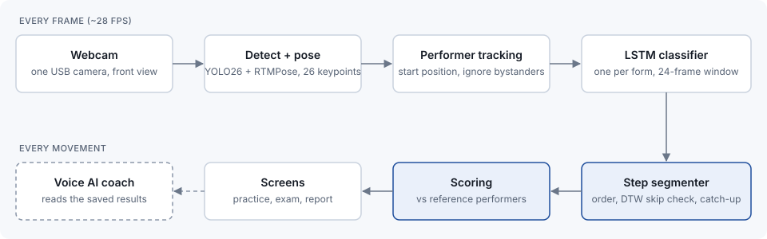

Featured · ZerOneDay · 2026
AI Taekwondo Coaching Kiosk
A kiosk for taekwondo schools. It watches a student perform a poomsae through one webcam, recognises every movement in order and scores it against skilled performers, live, with no server. I owned the AI pipeline and the kiosk app, from the first model to a field test in a dojang and the handover to a new team. My teammate built the voice AI coach.
~28 fpslive on one consumer GPU
8 formsTaegeuk 1–8
12releases, Jul → Nov
1,372automated tests
